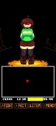
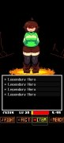

被 Chara 的弹幕虐了五轮之后，我终于摸透了这个同人游戏的全部脾气
从第一次被追踪型弹幕按在地上摩擦，到第五轮无伤通关解锁画廊最后一条路由，一个 Undertale 老粉在 LoveManiac 里踩过的坑和趟过的路。
去年冬天刷 itch.io 的时候，我在同人游戏区撞见了 LoveManiac。作为一个把 Undertale 屠杀线通了三回、对 Chara 又爱又怕的老粉，这个把弹幕战斗和好感度系统揉在一起的恶搞项目一下就勾住了我。它的定位很直接——去官网就能看到完整的 devlog 和版本更新记录——用 Undertale 的角色做壳，塞进去一个密度离谱的弹幕系统和一套藏得很深的多路由分支。我当时想，不就是个同人游戏吗，能有多难？
答案是，比我想象的难五倍不止。
第一轮：被弹幕按在地上摩擦
我是从 itch.io 直接装的，但回头看官方下载渠道其实更省事——版本同步快，不用等社区镜像。刚进游戏，我就被 Chara 的开场白怼了一句——跟原作里那个沉默的旁白完全不一样，这个 Chara 是全程跟你对话的，语气还特别冲。好感度系统从这时候就开始运作了：对话选项里有一条"调情方向"的 ACT，还有中性和冷漠的。我当时哪懂这个，随手选了个不冷不热的，结果 Chara 直接翻了个白眼，弹幕密度当场加了一档。
第一轮战斗我死了三次才勉强赢下来。散射型弹幕还好躲，到了中后段突然切出追踪型——那些红色的小方块跟着我的角色走，我在一个地方多停半秒就被蹭到。社区里说 0.2 版本的弹幕还没这么凶，0.3.2 大升级之后加了追踪和间歇两种新类型，难度直接跳了一个台阶。

那一轮我花了二十多分钟，金币攒到了八千多，商店里的奇怪药丸要一万零一块——刚好差一块。我当时以为是 bug，后来才知道这是设计好的：金币上限一万，某些关键道具就是要你在多轮之间做取舍。第一轮什么都想买是不可能的，必须规划。
赢下第一轮的时候，画廊解锁了大概三分之一的内容。有几个场景直接灰着，旁边的提示写着"需要特定条件"。我当时没当回事，以为多通几次就能解锁——事实证明我太天真了。
第二轮：好感度的阈值陷阱
第二轮我学乖了，全部选 Flirt ACT。Chara 的对话果然软了很多，弹幕密度似乎也稍微降了一点——虽然社区说这是体感不是官方数据，但我确实觉得好躲了一些。
这一轮我终于攒够钱买了奇怪药丸。0.3.4 版本新增的第二轮变体全靠这东西触发，时机不对还没用——得在特定场景之前吃。我当时瞎吃了一个，什么都没发生，浪费了一颗。
Lust Meter 在第二轮里拉到了八十多。那个东西填得快，但 100% 的高阈值场景还是没解锁，因为好感度不够。Nebby 的场景线需要好感度 80+，我第二轮结束的时候才 60 出头。
这一轮我开始读lovemaniac文档才搞明白，这个游戏的路由有三层锁死机制。第一层是好感度软锁——数值不够直接不给你选项。第二层是道具条件，比如 Butcher 皮肤线要先解锁皮肤，第二轮变要奇怪药丸。最狠的是第三层：永久分叉。0.2 之后加了个"拒绝 Flirt ACT"的选项，选了之后 Chara 的某些场景线永久消失，回不去的。我第一轮没选那个，算是躲过了一个坑。
第三轮：找猫和好感度攻坚
第三轮我决定主攻 Nebby 线。Nebby 是另一个核心角色，没有独立战斗，但她的场景线藏得深——要在主世界找齐四只猫，同时好感度还要拉到八十以上。
找猫本身不难，难的是好感度。单轮对话选项加的好感度有限，我前两轮累积才六十多。第三轮我全程 Flirt ACT，每一个能调情的选项都没放过，打完战斗又回去对话了好几次，终于在通关前把好感度冲到了八十二。
四只猫找齐、好感度达标，Nebby 的场景线弹出来的时候我松了口气。画廊里新解锁了五六个场景，还有一段独立的对话支线。这时候我才意识到，LoveManiac 的内容量比我最初以为的大太多了——六到八条核心路由，加上大量小分支和九种第二轮变体，不是一两轮能搞定的。
第四轮：无伤和死亡的哲学
第四轮我想挑战无伤。社区说 PC 键盘横屏模式是最优解，触屏会锁移动——这个 bug 0.3.4_2 紧急补丁才修掉，从 0.2 就开始有了。我切到 PC 模式，横屏，开始练。
无伤比我想象的难。不是弹幕太密，而是节奏问题。散射型可以走位躲，追踪型不能停，间歇型要掐准间隙穿过去。Butcher 皮肤下的弹幕更凶更密，还有弹幕雨从上面砸下来。我练了大概半小时，终于在第三次战斗做到了无伤通关——画廊里又多了一个 no-hit 专属场景。
然后是死亡触发。这个反直觉：要连续输给 Chara 三次才能触发。我之前都是往死里打，从来没想过要故意输。选了最难的弹幕模式，往弹幕上撞了三次，触发了死亡场景——画廊里最难解锁的条目之一，就这样拿到了。

第五轮：皮肤线和最后的尾巴
第五轮我才拿到 Butcher 和 Pale 两个皮肤。Pale Chara 对应原作屠杀线结尾的苍白形象，Butcher 是 0.3.4 新增的屠夫装。两个皮肤各有独立场景，画廊里单独分区计数。
这里我踩了最后一个坑：存档编辑器。当时我想快进一下，直接用编辑器改存档解锁全部场景。改完之后打开画廊，发现皮肤相关的条目还是灰的——原来存档里 unlocked_scenes 和 unlocked_skins 是两个独立的键，必须同时改。只改场景键没用。
到第五轮结束的时候，画廊解锁了大概九成的内容。剩下的一成是需要存档编辑器或者极其特定条件的彩蛋，我没再折腾。
五轮下来的复盘
总结一下这个游戏教给我的几件事。第一，不要试图一轮拿全——金币上限就是设计师给你的信号：你得规划、得取舍、得多回来。第二，好感度不是装饰品，是核心玩法的一部分，选错选项真的会永久锁路。第三，弹幕模式是固定的不是随机的，死了就 Load 反复练，总会过。第四，读文档比瞎试省时间——社区整理的多轮路线确实有用。
现在我偶尔还是会回去开一轮，看看有没有新的版本更新。0.3.5 给 Pale 和 Butcher 加了专属战斗背景，弹幕视觉效果也做了调整。下一个大版本还不知道什么时候来，但我不着急——好的同人游戏就是这样，慢慢磨才有味道。对了，这套资料同步在了 GitHub，国内访问的朋友可以看 Gitee 或 GitCode。